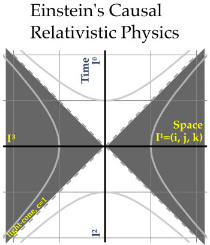

Bell's Future Quantum Mechanics - a Novel Interpretation
This essay provides an introduction to a new interpretation for quantum mechanics. Here it is in two sentences:
Bell's inequality backed by experimental evidence shows that
quantum mechanics must be non-local, thus the wave function
is space-like separated from the observer at the origin,
here-now. The product of the wave function and its conjugate
provide the odds for an interaction with the observer
happening here (0, 0, 0) in the future.
This novel interpretation is called Bell's future quantum mechanics.
New Views on Old Space-time
Start with a Minkowski space-time graph. All information that is local to the observer at the origin here-now is in the past lightcone. Quantum mechanics is non-local, ergo delete all local information - delete the past lightcone! The wave function has to reside in the space-like regions of space-time. The conjugate of the wave function goes on the other side. The product of the wave function and its conjugate is necessarily in the future at the spatial origin (here, or (0, 0, 0)). Quantum mechanics has always been about the future. What are the odds that an event will happen to an observer in the future? Bell's inequality is about the non-local nature of quantum mechanics. Deleting the past lightcone enforces non-locality. Space-like information can be used only to predict the future. This is the Bell's Future interpretation of quantum mechanics.
Historical Background
In 1935, Einstein, Polodsky, and Rosen (EPR) proposed that variables hidden in the past light cone could explain how quantum mechanics worked. The claimed inherent uncertainty of quantum mechanics could be traded for something more real, variables that are hidden. This was not an easy to dismiss proposal given Einstein's stature. It took until the 1960s when John Bell found an inequality that could test if variables are hidden in the past lightcone or the entangled states of quantum mechanics where somehow real because quantum information was non-local. If one asks the same question the same way, both models make identical predictions. If questions are asked at a different angle, the hidden variable hypothesis is unchanged. Quantum mechanics says correlations between measurements become stronger. A huge experimental effort from the 1980s until today has always confirmed the same result: quantum mechanics is non-local and hidden variable models are wrong.
My Beliefs About It All in 3D Space + Time
Einstein put Lorentz transformations to great use to solve difficult theoretical problems in physics. It was his math professor who recognized that Einstein was doing rotations not just in space, but in space-time. Here is a picture of all of space:

I hope the gentle reader is not offput by referencing a diety. The word choice was made because it is my belief that all of physics, both that that is currently known which is the vast majority, and that which remain unknown, must live only in 3D space + time, or space-time. I am more concerned with why parity is not conserved for beta decay than any biblical issue.
Noice how three spatial dimensions are written explicity in the space-time graph. Starting from studies done with five dimensions in the 1920s, research begun in the 1970s created a significant investigation into higher spatial dimensions. I believe all such work will have no lasting value. More recently, people have been championing the multi-verse. A multi-verse has multiple space-times. Again, I believe all such work witll have no lasting value.
I am radical conservative circa 1960s in regards to space-time.
Technical Tangent: quaternions
The graph reveals that I am a 1908 Minkowski radical. He wrote:
Henceforth space by itself, and time by itself,
are doomed to fade away into mere shadows,
and only a kind of union of the two
will preserve an independent reality.
If an event in space-time is just a bag of numbers (a vector with scant structure), it is OK to ask if the bag can be expanded as higher dimensional research does. If an event is just one number, the bag cannot be expanded. I study a kind of number with that property, quaternions. A breadcrumb appears on how the axes are labeled with power series of the 3-vector I ($I^0$ for the positive reals, $I^1$ for the imaginaries, $I^2$ for the negative reals, $I^3$ for the negative imaginaries). I like to algegraically enforce Minkowski's vision.
Quaternions are not central to Bell's future quantum mechanics. Still, while the car is in for repairs, one might as well consider a complete overhaul.
END of technical tangent.
In summary, space-time is everything we know, everything we do not know, all on the same stage.
Newton Through Subtraction
It is odd that most of space-time gets subtracted for Newtonian physics.

Space is abosulte. Time is absolute. There is no way in Newtonian physics to rotate space into time. This is the physics we experience everyday.
Einstein's Causal Relativistic Physics
The only kinds of events that can change an observer at the origin are events from the past lightcone.

Einstein was adroit at working with the space-like regions, realizing for example that events that are simultaneous in one reference frame will not be so in another. If one decides to restrict to the study causality, that is the reason to black out the space-time regions. Why did something happen? The answer is in the past lightcone, not the space-like region.
Bell's Future Quantum Mechanics
This is from a Wikipedia discussion of EPR paper:
The 1935 EPR paper condensed the philosophical discussion into a physical argument. The authors claim that given a specific experiment, in which the outcome of a measurement is known before the measurement takes place, there must exist something in the real world, an "element of reality", that determines the measurement outcome. They postulate that these elements of reality are, in modern terminology, local, in the sense that each belongs to a certain point in spacetime. Each element may, again in modern terminology, only be influenced by events which are located in the backward light cone of its point in spacetime (i.e., the past). These claims are founded on assumptions about nature that constitute what is now known as local realism.
It was the clause "only be influenced by events which are located in the backward light cone" that caught my attention. If there are no hidden variables as shown by experiments, remove any possibility.
Notice how Einstein causality and Bell's future combine to cover all of space-time. Both relativity and quantum mechanics were born and matured in the same time window, and at for Einstein, in the same mind.
Repeat the Exercise for Tangent Spaces
Space-time records where-when things are: location, location, location. Space-time formally has no information about change. Change lives in tangent spaces. Which tangent space is used determines what change is under study. The most common one is energy-momentum. Tangent spaces can also be broken up into the same four types: all, classical, relativistic, and quantum:

Imagine one were to study the classical motion of a rock. There would be energy and momentum at the point in space-time where the rock happened to be. Everywhere-when else in space-time, the energy-momentum space would be zero. These zeroes are usually ignored, so the topic of tangent spaces only appears at the graduate-level. It makes the switch to continuous fields seem mystical. Instead, the difference between the two is more like discrete and continuous for energy-momentum.
Physicists have studied all combinations of the base space space-time with the tangent space energy-momentum. There is both classical and relativistic quantum mechanics.
Uncool Sidebar: The Base Space is the Base
The base space, space-time, cannot be changed by anything. I appreciate that this clear statement will be violently rejected by those who have made a serious study of Einstein's general relativity. Tens of thousands of times it has been repeated: gravity bends space-time. I am not in denial of the words. I do feel compelled to at least question the link to the math. Gravity alters a tangent space of space-time as seen by the dt and dR in metric solutions. Space-time has Lorentz symmetry and its origin. Gravity and energy-momentum have Poincare symmetry. Summing up all the changes in all the tangent spaces results in a curved path in space-time. All the change happens in the tangent space. We should be saying the tangent space is curved then summed, not that the base space is curved.
End sidebar
Momentum versus a Momentum State
Why use momentum in relativity, but momentum states in quantum mechanics? Momentum from the past lightcone can change the motion of the observer at the origin. The entire chain of events leading to that chang in the observer can be known. A space-like momentum state is different. Momentum states may never change the observer at the origin, here-now. The precise odds of a momentum state changing the momentum of an observer can be calculated. In the future, if an interaction does occur, it will change the path of the observer in the usual way. The entire chain of events leading to this momentum change cannot be known because they are space-like separated. The observer is necessarily blind-sided by a momentum state.
The same story applies to energy versus an energy state. Observers can absorb energy from the past lightcone and heat up. Observers cannot absorb energy from an energy state as it is too far away. The can in the futur absorb the energy to the same effect. We can calculate the odds.
The Wave Function
The wave function is a set of space-like energy-momentum states. Each state may not have a time-like relationship to the observer at the origin, here-now. Each state of the wave function can have a time-like relationship with other states in the wave function. Light-like relationships are not addressed for the moment as that is a refinement one will have to include with care later.
For a complex-valued wave function, the conjugate is simple to construct. The product of a wave function and its conjugate evaluates to a positive real number. If properly normalized, the postive number is the odds of an interation happening. Nothing unusual is happening under the Bell's future interpretation, all calculations will be the same.
Dull Quaterion Series Quantum Mechanics
Quaternion quantum mechanics has been studied and presented in a book-length form by Stephen Adler. The topic has been commented on in a December 2018 blog by Scott Aaronson where he came to the conclusion that quaternion quantum mechanics was a "complete dumpster fire" because it would allow superluminal transfer of information. I agree, any algebraic system that allows superluminal transformation is boring and deserves no futher study. I was suprised that this flaw was known to Adler as he admitted to Aaronson.
In a rapid exchange I had with Aaronson, I came up with the idea of "point-one-way" quaternions. Pick an arbitrary direction and stick with that for all calculations. Aaronson agreed it would work. He just thought it was so dull it did not even deserve a new name.
As I considered it more, a better name would have been "point-with-precision" quaternion series quantum mechanics. In the lab, physics experiments are reknown for their precision of the experimental apperatus. It is common to use tables that isolate the vibrations of the surroundings from the experiment. The precision of location known at the bench is apply to the math used. Quaternions that point in the same direction commute. A quaternion series is not a division algebra like the quaternions. Instead it is a semi-group with inverses. A semi-group has more than one inverse.
For quaternion-valued wave functions, the conjugate has a physical meaning: it is a mirror reflection in space. Why do so? The product of the wave function and its mirror reflection is a here-future value, (0, 0, 0) for the 3-vector and a positive real number. If properly normalized, the real value is the odds of seeing an interaction. It is the simple, physical interpretation of an otherwise abstraction notion of a complex-valued wave function that I see as a benefit worthy of exploration.
The Bell's future quantum mechanics interpretation in no way depends on quaternion series quantum mechanics being a viable algebric approach to doing calculations.
Interpretations of Quantum Mechanics
There are at least 20 intepretations of quantum mechanics. Nearly all of them make the same predictions as does this one. I have seen Sean Carroll take a poll of graduate students to find their favorite. This is not the was physics works. Physics is a contact sport with only one eventual winner.
Physics by subtraction defines areas of study. Newton's classical physics uses only the axes. Causality in special relativity uses only the past lightcone. By contrast, quantum mechancis uses nothing from the past lightcone. Quantum mechanics uses space-like states to calculate the odds of interactions in the future.
Bell's future quantum mechanics looks bright. I hope this idea goes viral in a good way.